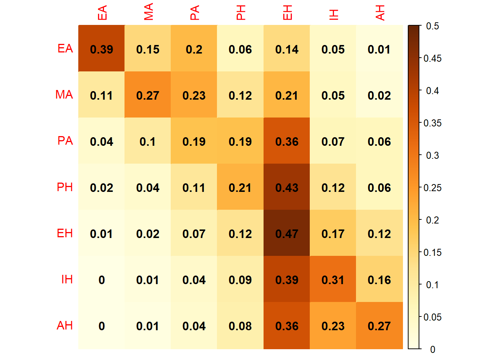
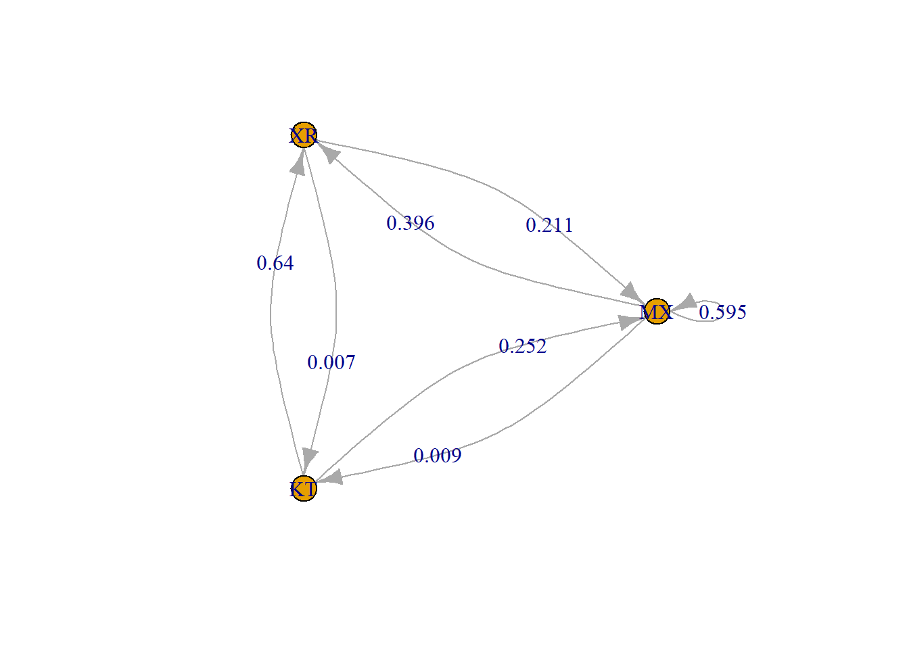
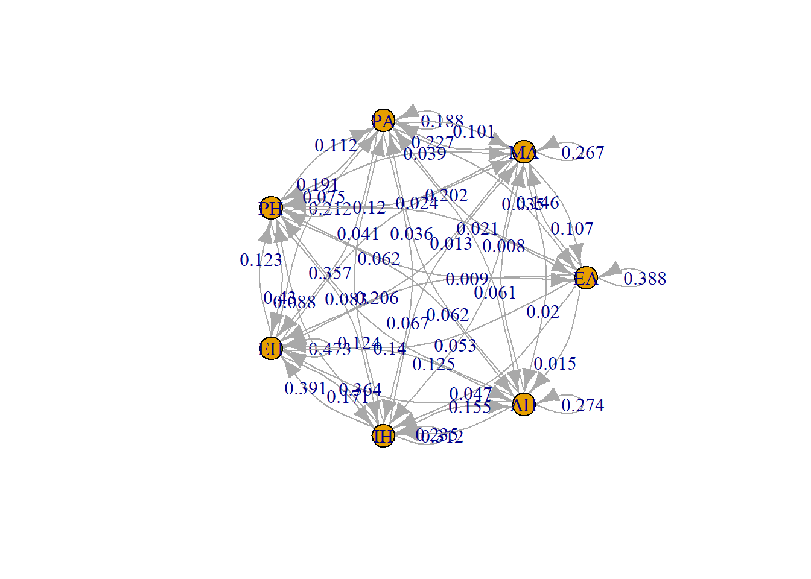
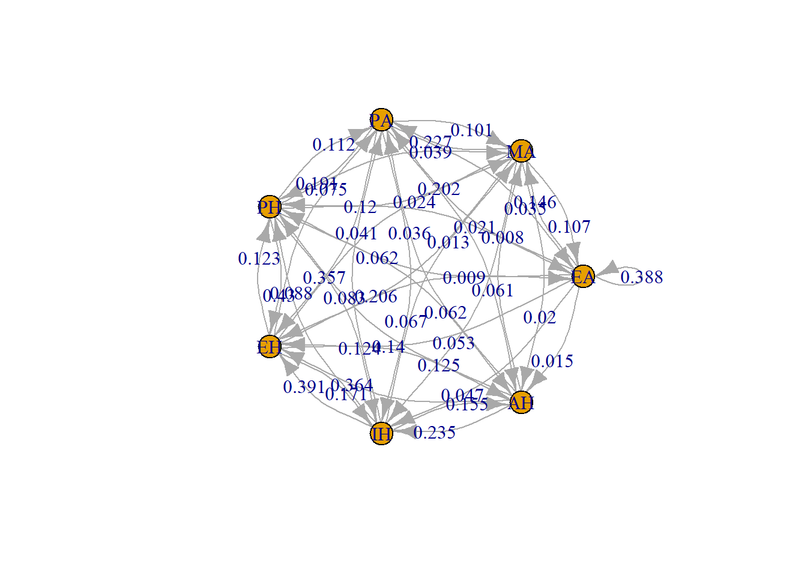

Στο Social Mobility in Britain εκτιμάται η πιθανότητα να έχει ένας γιος διαφορετική κοινωνική τάξη από αυτή που είχε ο πατέρας του στην Αγγλία και την Ουαλία του 1949. Ο Glass παρουσιάζει 7 κοινωνικές τάξεις:
| Τάξη | Συμβολισμός |
| Επαγγελματίες και ανώτερα διοικητικά στελέχη | EA |
| Μάνατζερ και ανώτερα στελέχη | MA |
| Προϊστάμενοι ανώτερου επιπέδου μη χειρώνακτες | PA |
| Προϊστάμενοι χαμηλότερου επιπέδου μη χειρώνακτες | PH |
| Ειδικευμένοι χειρώνακτες και απλοί μη χειρώνακτες | EH |
| Ημιειδικευμένοι χειρώνακτες | IH |
| Ανειδίκευτοι χειρόνακτες | AH |
Ο πίνακας που δίνει τις πιθανότητες μετάβασης ενός γιου από την κοινωνική τάξη του πατέρα είναι ο κάτωθι. Η κατακόρυφες ενδείξεις παρουσιάζουν την κοινωνική τάξη του πατέρα και οι οριζόντιες του γιού.
## EA MA PA PH EH IH AH
## EA 0.388 0.146 0.202 0.062 0.140 0.047 0.015
## MA 0.107 0.267 0.227 0.120 0.206 0.053 0.020
## PA 0.035 0.101 0.188 0.191 0.357 0.067 0.061
## PH 0.021 0.039 0.112 0.212 0.430 0.124 0.062
## EH 0.009 0.024 0.075 0.123 0.473 0.171 0.125
## IH 0.000 0.013 0.041 0.088 0.391 0.312 0.155
## AH 0.000 0.008 0.036 0.083 0.364 0.235 0.274Έτσι, αν ο πατέρας ήταν μάνατζερ ή ανώτερο στέλεχος
(MA), τότε ο γιος θα ήταν ειδικευμένος χειρώνακτας ή απλός
μη χειρώνακτας (EH) με πιθανότητα 0.206. Αν συνέβαινε το
ανάποδο, δηλαδή ο πατέρας ήταν ειδικευμένος χειρώνακτας ή απλός μη
χειρώνακτας (EH), τότε ο γιος θα μπορούσε να είναι μάνατζερ
ή ανώτερο στέλεχος (MA) με πιθανότητα πολύ μικρότερη,
δηλαδή 0.024.
Για να φτιάξουμε τον παραπάνω πίνακα χρησιμοποιήσαμε τον κάτωθι
κώδικα. Η εντολή rownames(pin_met) <- colnames(pin_met)
ήταν για να δώσει τα ονόματα των στηλών στις γραμμές.
EA <- c(0.388, 0.107, 0.035, 0.021, 0.009, 0.000, 0.000)
MA <- c(0.146, 0.267, 0.101, 0.039, 0.024, 0.013, 0.008)
PA <- c(0.202, 0.227, 0.188, 0.112, 0.075, 0.041, 0.036)
PH <- c(0.062, 0.120, 0.191, 0.212, 0.123, 0.088, 0.083)
EH <- c(0.140, 0.206, 0.357, 0.430, 0.473, 0.391, 0.364)
IH <- c(0.047, 0.053, 0.067, 0.124, 0.171, 0.312, 0.235)
AH <- c(0.015, 0.020, 0.061, 0.062, 0.125, 0.155, 0.274)
pin_met <- data.frame(EA, MA, PA, PH, EH, IH, AH)
rownames(pin_met) <- colnames(pin_met)Μπορούμε να χρησιμοποιήσουμε το πακέτο corrplot για να κάνουμε λίγο ομορφότερο και πιο κατατοπιστικό τον πίνακά μας:
Ακολούθως ορίζουμε τη συνάρτηση pinakas_metabasis(),
στην οποία θα εισάγουμε τον παραπάνω πίνακα:
pinakas_metabasis <- function(dedomena, arxi = NULL, telos = NULL) {
dedomenaM <- as.matrix(dedomena)
eyros <- c(arxi, telos)
corrplot(dedomenaM, is.corr = FALSE, method="color", col.lim = eyros, addCoef.col = 'black')
}Ακολούθως, γράφουμε:
Έτσι προκύπτει ο ίδιος πίνακας μετάβασης που είχαμε πριν, απλά οι τιμές έχουν χρωματιστεί, για να διακρίνονται ευκολότερα οι διαφορές τους.
Έτσι πλέον βλέπουμε εύκολα ότι είναι δυσκολότερο για ένα παιδί ενός πατέρα κατώτερης κοινωνικής τάξης, να μπορέσει να ανέλθει σε μία ανώτερη. Συνήθως είτε θα παραμείνει εκεί που ήταν ο πατέρας του ή θα πέσει χαμηλότερα.
Κάποιος μπορεί να δυσαρεστηθεί από το άκομψο άνω φράγμα 0.47. Ίσως να
ήταν ομορφότερο να είναι το 0.5. Στην περίπτωση που επιθυμούμε κάτι
τέτοιο, μπορούμε να συμπληρώσουμε στη συνάρτηση
pinakas_metabasis() τα όρια στα οποία θα βρίσκονται οι
χρωματισμοί μας. Επειδή εδώ οι πιθανότητες αρχίζουν από το 0, βάλαμε και
αυτό για αρχή.

Βλέπουμε λοιπόν ότι τα όρια των χρωμάτων κειμένονται από 0 έως 0.5, όπως επιθυμούσαμε.
if(!require(igraph)){
install.packages("igraph")
library(igraph)
}
if(!require(markovchain)){
install.packages("markovchain")
library(markovchain)
}# Δημιουργία του πίνακα πιθανοτήτων μετάβασης
MX <- c(0.594, 0.211, 0.252)
XR <- c(0.396, 0.782, 0.641)
KT <- c(0.009, 0.007, 0.108)
pin_met2 <- data.frame(MX, XR, KT)
rownames(pin_met2) <- colnames(pin_met2)
pin_met2## MX XR KT
## MX 0.594 0.396 0.009
## XR 0.211 0.782 0.007
## KT 0.252 0.641 0.108diagramma_metabasis <- function(dedomena) {
dedomena2 <- dedomena/rowSums(dedomena)
graph <- graph_from_adjacency_matrix(as.matrix(dedomena2), mode = "directed", weighted = TRUE)
# Σχεδίαση του γράφου με καμπυλόγραμμα βέλη και ετικέτες
plot_result <- plot(graph, layout = layout.circle(graph), edge.curved = 0.3, arrow.size = 0.5,
edge.label = round(edge_attr(graph, "weight"), 3),
edge.label.pos = 0.5, edge.label.dist = 0.2)
}

pin_met2b <- pin_met2/rowSums(pin_met2)
markovChain2 <- new("markovchain", states = colnames(pin_met2b),
transitionMatrix = as.matrix(pin_met2b))
plot(markovChain2)